练习: 使用测量
目标
成功完成此练习后，您将能够：
- 准备一个用于测量规格的模型。
- 创建合成和力矩测量。
- 创建位移测量。
- 创建已计算的测量。
- 创建应力评估测量。
假定背景
在本练习中，您将检查 Creo Simulate 中某些可用于对模型中特定位置的对应力、变形或或其他数量进行用户定义的评估的功能。它们可能并不是整个模型中的最大或最小数量，但却位于特定位置。
在本练习中，您将检查受到单位载荷的塑柄夹。您将对发现支架上的反作用力、沿着修剪长度的剪切力和力矩以及模型中临界区域的应力感兴趣。此外，您还会对发现模型在加载时所存储的弹簧力和弹簧能量感兴趣。为完成此操作，需要利用 Creo Simulate 中的测量功能。
“关闭窗口”(Close Window) “拭除未显示的”(Erase Not Displayed)
“拭除未显示的”(Erase Not Displayed) 
 Simulate_Modeling\Measures
Simulate_Modeling\Measures
 MEASURE_CLIP_B.PRT
MEASURE_CLIP_B.PRT
-
任务 1. 调查模型属性。
1. 单击“文件”(File) > “准备”(Prepare) > “模型属性”(Model Properties)。将出现“模型属性”(Model Properties) 对话框。
2. 审阅模型中所使用的单位。要关闭“模型属性”(Model Properties) 对话框，单击“关闭”(Close)。
3. 在模型树中，展开“材料”(Materials)。右键单击 THERMOPLAST_LIGHTGREY_RAL_7035，然后选择“编辑定义”(Edit Definition)。将出现“材料定义”(Material Definition) 对话框。
4. 查看杨氏模量 (E) 值和泊松比值。单击“确定”(Ok) 以关闭“材料定义”(Material Definition) 对话框。
5. 审阅模型中已定义的单位曲面载荷，以使夹子弯曲。定义约束以模拟正在固定夹子的螺栓。螺栓实际上并未在模型中进行定义；相反地，模型中的约束将模拟螺栓孔曲面未变形的情况。
-
任务 2. 通过创建体积块区域模拟特征和基准点，为测量规格准备模型。
1. 在功能区中，选择“精细模型”(Refine Model) 选项卡。
2. 从“区域”(Regions) 组的“体积块区域”(Volume Region) 下拉菜单中选择“拉伸”(Extrude) 。“拉伸”(Extrude) 操控板随即出现。
3. 选择“放置”(Placement) 选项卡。
4. 单击“定义”(Define)。将出现“草绘”(Sketch) 对话框。
5. 在模型中选择显示的曲面。
6. 单击“草绘”(Sketch)。
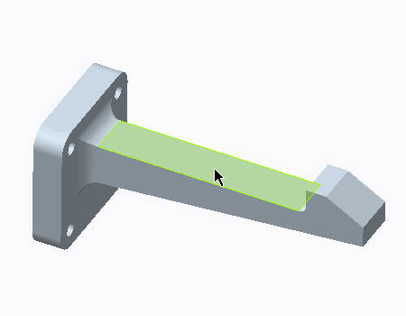
7. 在功能区中，选择“草绘”(Sketch) 选项卡。
8. 在“设置”(Setup) 组中单击“草绘视图”(Sketch View)
 以定向草绘平面。
以定向草绘平面。
9. 在“设置”(Setup) 组中单击“参考”(References) 。“参考”(References) 对话框随即显示。
10. 在模型上，为如图所示的草绘几何选择参考。删除所列出的任何未使用的参考。
11. 在“参考”(References) 对话框中，单击“关闭”(Close)。
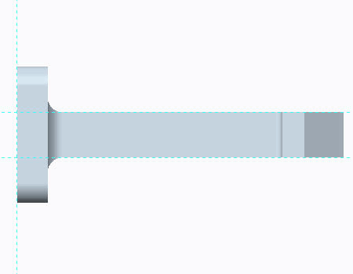12. 从“草绘”(Sketching) 组的“矩形”(Rectangle) 类型下拉菜单的中选择“拐角矩形”(Corner Rectangle)
 。
。
13. 草绘矩形和尺寸，如图所示。
14. 单击“确定”(OK)
 以完成草绘并返回到“拉伸”(Extrude) 操控板。
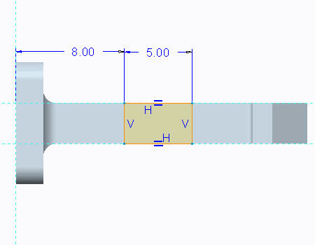
以完成草绘并返回到“拉伸”(Extrude) 操控板。
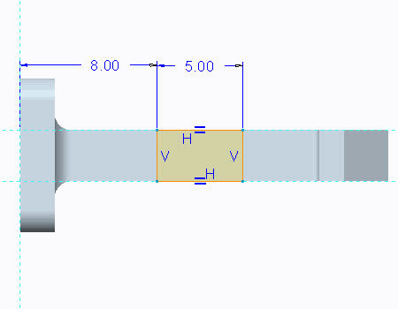15. 从深度下拉菜单中选择“穿透”(Through All) 。
16. 单击“应用保存更改”(Apply-Save Changes)
 。
。
17. 在功能区中，选择“精细模型”(Refine Model) 选项卡。
18. 在“基准”(Datum) 组中单击“点”(Point) 。“基准点”(Datum Point) 对话框随即出现。
19. 在模型中选择显示的曲面。

您在模型中创建的点不必为硬点 (有限元节点)，但此点必须驻留在几何上。您也可以在几何的内部放置测量，但那些测量必须在诸如“体积块区域”的边之类的参考上创建。
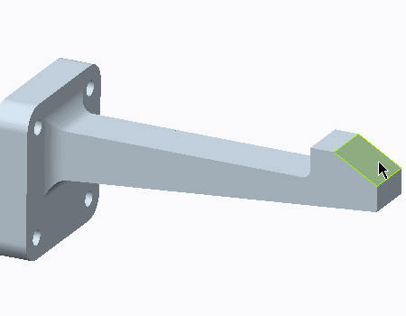20. 启用“平面显示”(Plane Display) 。
21. 在“基准点”(Datum Point) 对话框中，单击“偏移参考”(Offset References) 字段。
22. 按住 CTRL 键并选择基准平面 Front_XY 和如图所示的边。
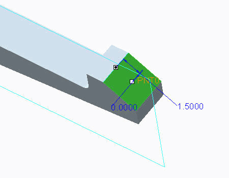23. 在“基准点”(Datum Point) 对话框的“偏移参考”(Offset references) 部分中，为“前”偏移参考键入 0.0，为“边”偏移参考键入 1.50。
24. 单击“确定”(OK)。
-
任务 3. 创建合成和力矩测量。
这些测量会评估约束的反作用力。为每个反应方向创建四种测量。
1. 在功能区中，选择“主页”(Home) 选项卡。
2. 在“运行”(Run) 组中单击“测量”(Measures)
 。将出现“测量”(Measures) 对话框。
。将出现“测量”(Measures) 对话框。
3. 单击“新建”(New)。将出现“测量定义”(Measure Definition) 对话框。
4. 完成“测量定义”(Measure Definition) 对话框，如图所示。在“空间评估”(Spatial Evaluation) 部分中，单击“选择参考”(Select Reference)
 ，然后在模型树中选择 Constraint1。
，然后在模型树中选择 Constraint1。
5. 单击“确定”(OK)。不要关闭“测量”(Measure) 对话框。
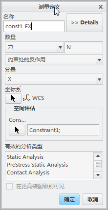6. 使用先前的步骤，为其余三个约束中的每个约束都创建 X 力测量。
7. 使用先前的步骤，为所有四个约束创建 Y 和 Z 方向力测量。保持相同的命名惯例。共有 12 种测量。不要关闭“测量”(Measure) 对话框。
可利用“测量”(Measure) 对话框中的“复制”(Copy) 来创建这些测量。
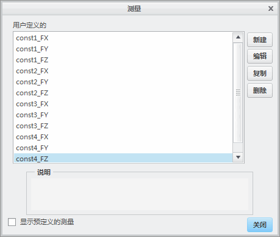8. 在“测量”(Measures) 对话框中，单击“新建”(New)。将出现“测量定义”(Measure Definition) 对话框。
9. 完成“测量定义”(Measure Definition) 对话框，如图所示。在“空间评估”(Spatial Evaluation) 部分中选择“曲面”(Surfaces) 之后，单击“选择参考”(Select Reference)
并选择通过创建体积块区域所生成的曲面，如模型中所示。
10. 单击“确定”(OK)。
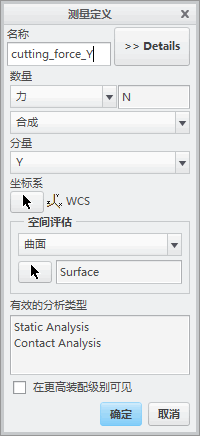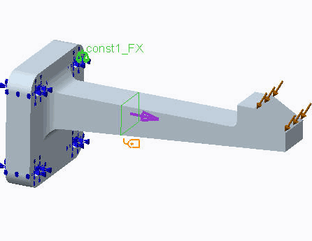11. 使用先前的步骤，在相同位置创建 X 力测量。不要关闭“测量”(Measure) 对话框。
12. 在距离支架偏移 8mm 的位置处定义一个测量合成量。在“测量”(Measure) 对话框中，单击“新建”(New)。
13. 完成“测量定义”(Measure Definition) 对话框，如图所示。在“空间评估”(Spatial Evaluation) 部分中选择“曲面”(Surfaces) 之后，完成下列操作：
- 像先前步骤那样，单击“选择参考”(Select Reference) 以选择通过创建体积块区域所生成的曲面。
- 在“点”(Point) 部分，单击“选择参考”(Select Reference) 以选择点，如图所示。
14. 单击“确定”(OK)。不要关闭“测量”(Measure) 对话框。
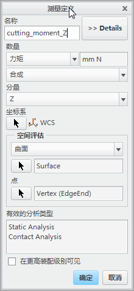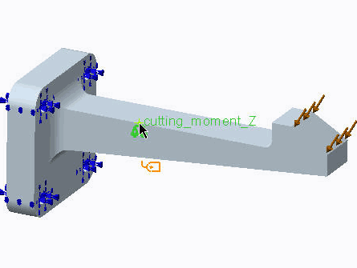15. 使用先前的步骤，在相同位置创建另一个力矩测量，只是将一个不同的点用于“空间评估”，如图所示。不要关闭“测量”(Measure) 对话框。
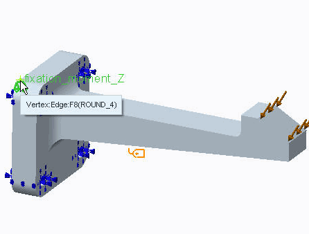 - 像先前步骤那样，单击“选择参考”(Select Reference)
-
任务 4. 创建位移测量。
1. 在“测量”(Measures) 对话框中，单击“新建”(New)。将出现“测量定义”(Measure Definition) 对话框。
2. 如图所示完成字段。所选的点是创建于先前任务中的基准点。
3. 单击“确定”(OK)。不要关闭“测量”(Measure) 对话框。
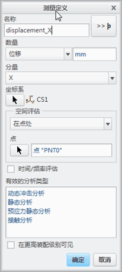
-
任务 5. 创建计算的测量。
1. 在“测量”(Measures) 对话框中，单击“新建”(New)。将出现“测量定义”(Measure Definition) 对话框。
2. 完成对话框，如图所示。
3. 单击“确定”(OK)。不要关闭“测量”(Measure) 对话框。
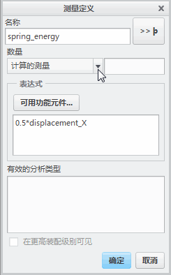
-
任务 6. 创建应力评估测量。
1. 在“测量”(Measures) 对话框中，单击“新建”(New)。将出现“测量定义”(Measure Definition) 对话框。
2. 完成“测量定义”(Measure Definition) 对话框，如图所示。在“空间评估”(Spatial Evaluation) 部分中选择“整个选定几何”(Over Selected Geometry) 之后，单击“选择参考”(Select Reference)
并选择通过创建体积块区域所生成的曲面，如模型中所示。
3. 单击“确定”(OK)。不要关闭“测量”(Measure) 对话框。
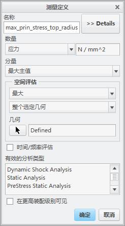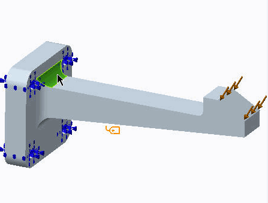4. 使用先前的步骤，创建另一个应力评估测量。评估刚刚选定的圆角对面的圆角上的最小主应力。
5. 在“测量”(Measures) 对话框中，单击“关闭”(Close)。
-
任务 7. 调查作为静态分析输出的测量。
1. 在功能区中，选择“主页”(Home) 选项卡。
2. 在“运行”(Run) 组中单击“分析和研究”(Analyses and Studies)
 。将出现“分析和设计研究”(Analyses and Design Studies) 对话框。
。将出现“分析和设计研究”(Analyses and Design Studies) 对话框。
3. 选择已定义的研究。单击“开始运行”(Start Run) 。
4. 单击“是”(Yes) 以运行交互诊断。
5. 单击“显示研究状况”(Display Study Status) 以监视运行。
6. 在“运行状况”(Run Status) 对话框中，标识 Creo Simulate 所报告的默认测量的列表 (最小或最大数量) 和已定义测量的列表。因为载荷不会随着时间或频率改变，所以仅报告您所创建的测量的单个值。
测量也可用作解决方案能够收敛的数量。在任意“多通道自适应分析”(Multi-Pass Adaptive Analyses) 对话框中，选择单选按钮“测量”(Measures) 并选择任意默认的或用户定义的测量。
7. 在“运行状况”(Run Status) 对话框中，单击“关闭”(Close)。
8. 在“诊断”(Diagnostics) 窗口中单击“关闭”(Close)。
9. 在“分析和设计研究”(Analyses and Design Studies) 对话框中，单击“关闭”(Close)。
练习就此结束。